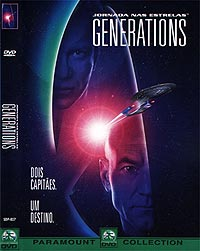
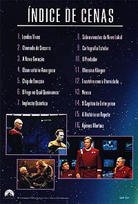

|
Por Luiz
Felipe do Vale Tavares
O
Filme
 Neste
filme Picard e Kirk se unem (nos ltimos 15 minutos do filme!)
para deter um cientista louco, Soran, que ameaa destruir
planetas inteiros para conseguir seu objetivo, entrar no Nexus,
uma espcie de paraso onde todos os sonhos se realizam.
Com certeza um dos filmes mais esperados de Jornada nas
Estrelas e igualmente um dos mais decepcionantes. No que o
filme seja ruim. Na verdade bom, mas com certeza um filme
que poderia ser muito, mas muito melhor.
O problema foi como o filme foi realizado. A trama tinha tudo para
dar certo, mas os roteiristas preferiram achar o caminho mais
fcil para se chegar logo ao final, matando Kirk e finalmente
passando a Nova Gerao para o domnio dos filmes de Jornada.
E nem mesmo a tripulao da Nova Gerao conseguiu
destaque nesse filme. Apenas Picard e Data tm algo de til para
fazer. O restante (Riker, Troi, Crusher etc) se limitou apenas a
fazer pequenas aparies com o mnimo de dilogo possvel.
Est certo que dificlimo fazer um filme com sete personagens
e conseguir dar destaque a todos, mas parece que os roteiristas
nem tentaram.
Se os roteiristas queriam matar Kirk e destruir a Enterprise-D em
um nico filme, porque no matar dois coelhos com uma nica
cajadada? Com certeza Kirk teria um fim mais digno se morresse no
comando da Enterprise-D realizando um ltimo sacrifcio, por
exemplo. Acho que a maioria dos fs concordariam com esse fato.
Mas em vez disso os roteristas preferiram Kirk saindo na porrada,
literalmente, com Soran e morrendo de forma estpida caindo de
uma ponte.
Kirk dando porradas nos seus inimigos no est fora de contexto
com o personagem (vide os episdios "Shore Leave",
"Where No Man Has Gone Before", "Arena"
e outros mais), mas o problema que ele j saiu da faixa dos 30
anos de idade h mais de 30 anos. Kirk deveria morrer na ponte de
uma nave, pelo menos, e no distribuindo socos com quase 70 anos
de idade.
"Generations" talvez seja considerado como o
filme de oportunidades perdidas no mundo de Jornada nas
Estrelas, pois traz eventos importantssimos para o universo
da srie e estraga quase todos eles. Por exemplo:
- A morte de Kirk: caiu de um ponte (parece piada);
- Data passa a ter emoes: estragou o personagem;
- O fim do mistrio sobre o passado de Guinan: s aumentou o
mistrio e no explicou nada;
- A morte da famlia de Picard: para que trazer tanta tragdia
para a vida dele?
- A Enterprise-B: a nave ficou legal, mas onde j se viu
tripulao to despreparada?!
- A destruio da Enterprise-D: destruda por uma velha e quase
inofensiva ave de rapina Klingon! Que fosse por uma nave altura
pelo menos.
Concluindo, o filme bom. Mesmo com todas essas crticas acima.
Proporciona uma aventura legal por duas horas, com bons efeitos
especiais, elenco competente e uma excelente trilha sonora.
Imagem
 "Generations"
apresentado em widescreen na proporo original de 2,35:1.
Infelizmente a imagem no anamrfica e, por isso, no
proporciona a qualidade esperada de um DVD. A imagem do filme
decepcionante, principalmente para um filme to recente (1994).
A imagem est muito granulada e perde boa parte da definio
nas cenas mais escuras. As cores no esto muito bem definidas e
esto um pouco desbotadas.
O grande problema foi o fato da Paramount ter usado o mesmo master
utilizado para o Laserdisc, que foi lanado no incio de 1995.
Fazendo uma comparao entre o Laserdisc e o DVD, no h
aparentemente nenhuma diferena, salvo uma pequena melhora na
definio da imagem.
A Paramount merece repreenso pela preguia. Ao invs de criar
um novo master, prprio para o formato DVD, com widescreen
anamrfico e melhor definio, a distribuidora optou pela
economia de dinheiro e simplesmente usou um master ultrapassado
j existente. O estdio deve ser pensado que qualquer esforo a
mais seria intil, pois os fs comprariam de qualquer jeito
mesmo.
Mesmo assim, a imagem muito superior da fita VHS, mas est
longe dos padres de qualidade de imagem que um DVD pode
oferecer.
Som
Ao contrrio da imagem, o som muito bom, porm no to bom
quanto o de "Primeiro Contato"
ou de "Insurreio".
Foi utilizado o mesmo som do Laserdisc, que por sinal foi um dos
primeiros filmes nesse formato a ser lanado em Dolby Digital.
O som em ingls Dolby Digital 5.1 cria um timo ambiente sonoro,
com boa distribuio entre as caixas frontais e traseiras.
Merece destaque a cena em que a Enterprise-B encontra o Nexus
(logo no incio do filme) e a cena da queda do disco da
Enterprise-D.
Tambm est disponvel a opo de udio em espanhol, porm
em Dolby Surround apenas. Como em "Insurreio",
tambm no est disponvel a opo de udio em portugus.
As legendas esto disponveis em ingls, portugus e espanhol.
Extras
Dessa vez a Paramount nos premiou com absolutamente nada de
extras. Nem mesmo um trailer de cinema est disponvel. Haja
preguia e descaso para com os consumidores! Os menus so feios
e estticos, porm de fcil navegao.
Ficha
Tcnica
Extras:
Menu interativo, Seleo de Cena
Vdeo:
Widescreen (2,35:1)
udio:
Ingls (Dolby Digital 5.1 Surround)
Espanhol (Dolby Digital 2.1 Surround)
Legendas:
Ingls, Portugus e Espanhol
Ano de produo:
1994
Durao:
118 minutos
Data de Lanamento no Brasil (Regio 4)
29/08/2001
|